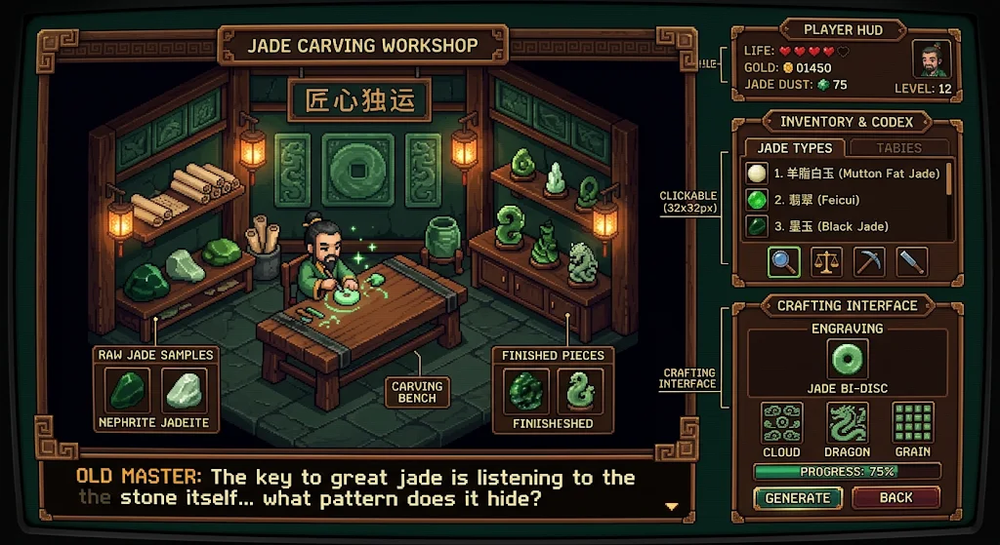
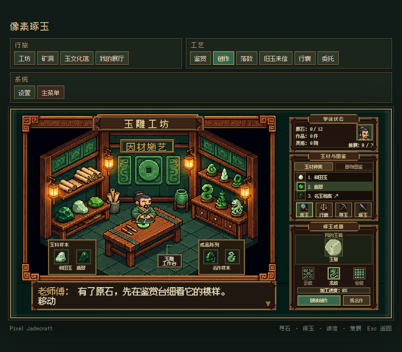

工坊构图 · 首轮校正
2026-11-15 · 对照原概念图 09，校正人物比例、袖口与刀尖位置、侧栏标题及对白边距。下方为运行截图，没有替换原图或给出相似度分数。

原概念图。英文和演示生命/金币数值在游戏里替换为中文及实际材料、作品、灵感进度。
相同窗口的前后对照
拖动滑块：左侧显示调整前，右侧显示调整后。重点观察人物的宽高比例、右侧标题和对白框左边距。
本轮结果与待办
| 对象 | 本轮结果 | 剩余差距 |
|---|
| 师傅 | 主体约73×89，贴近规格中的70×90；下刀点保持在玉料上 | 仍需俯身作业姿态和左手扶玉动作 |
| 工作台 | 人物比例与接触位置重新对齐 | 背景中的桌面未重绘，位置偏左、透视未配准 |
| 侧栏与对白 | 三级面板尺寸不变，标题12px，底部留白回归规格 | 小窗口缩放后文字较小 |
800×700 操作检查

工作台和右侧续作均经过实际点击；加工弹窗可纵向滚动保存。
验收记录 · 浏览器结果 · 137项测试与生产构建通过。95%视觉目标未验收。